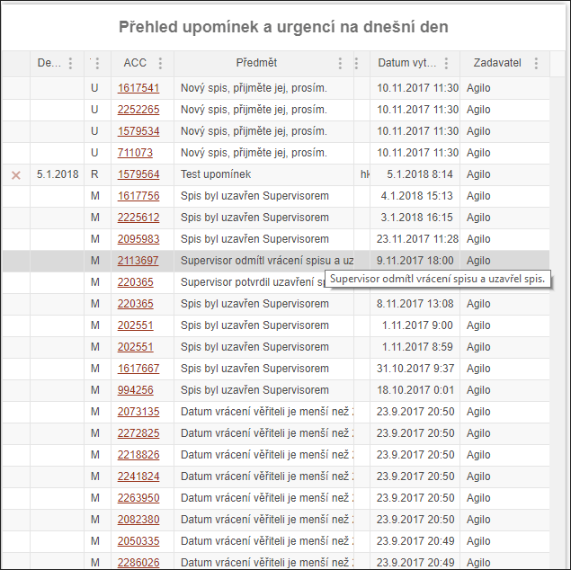
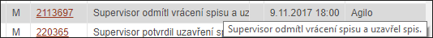

Tabulka upomínek
V této tabulce se zobrazují všechny Urgence (U), Zprávy (M) a Upomínky (R), které je třeba vyřešit. Upomínky (R) mají svůj datum Deat line, tedy konečné datum vyřízení.

Pokud některý text není vidět, stačí nad něj postavit kurzor myši a v "bublině" se vypíše celý text buňky.

Data v tabulce lze filtrovat a třídit podle jednotlivých sloupečků.
Kliknutím na číslo spisu (ACC) se uživatel dostane na příslušnou záložku s uvedeným spisem.